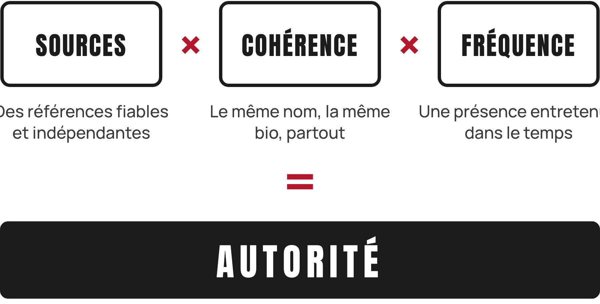
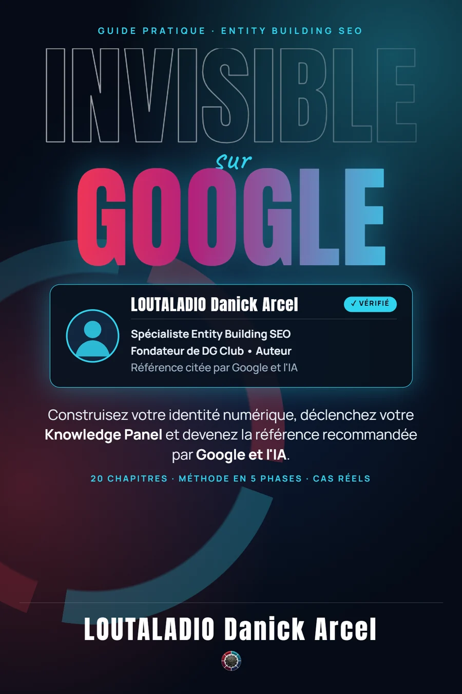
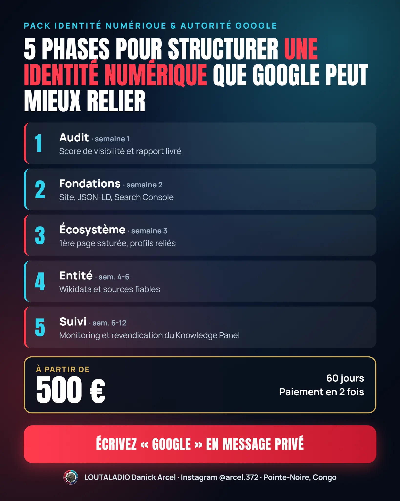
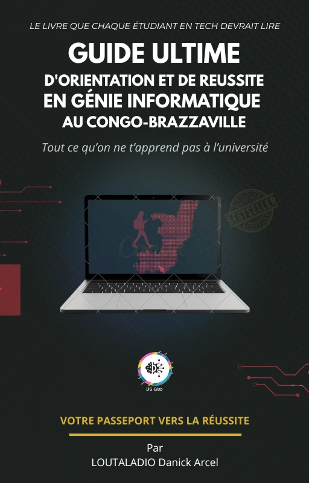

Les éléments importants sont dispersés.
Votre site, votre bio, vos profils et vos publications ne présentent pas toujours la même identité professionnelle.
IDENTITÉ NUMÉRIQUE
DG Club organise votre site, vos profils et vos sources pour aider vos futurs clients à comprendre et vérifier votre parcours professionnel.
Gratuit · 15 min · Sans engagement · WhatsApp
LA PREUVE, EN CLAIR
Trois profils, trois recherches Google. Les visuels sont affichés sans retouche. Ouvrez une capture pour l’examiner en grand.


Captures présentées à titre d’exemples documentés. Chaque stratégie dépend des sources disponibles et ne garantit pas l’obtention d’un Knowledge Panel.
LE DÉFI
Un client potentiel cherche votre nom, recoupe vos informations et se fait une première opinion. Si vos profils se contredisent ou restent isolés, il doit faire lui-même le lien.
Votre site, votre bio, vos profils et vos publications ne présentent pas toujours la même identité professionnelle.
Sans sources reliées ni description stable, les moteurs et les prospects ont moins d’indices pour confirmer qui vous êtes.
Une présence structurée aide à retrouver les preuves et à comprendre le parcours avant le premier échange.
Le point de départ n’est pas une promesse de positionnement : c’est une identité vérifiable.
Voir comment nous la construisonsLA MÉTHODE DG CLUB
L’Entity Building organise les sources qui parlent de vous afin que votre expertise soit plus facile à comprendre et à vérifier.
Cette grille de travail pédagogique, issue du livre DG Club, ne garantit aucune décision de Google.

Définir le nom canonique et l’Entity Home qui décrivent la personne, son activité et ses publications.
Unifier les bios, relier les profils et structurer les relations avec les données Schema.org utiles.
Consolider les références, les publications, les identifiants et le suivi d’indexation disponibles pour chaque projet.
DG Club peut structurer et documenter les actions. Google choisit seul ce qu’il indexe, la manière dont il l’affiche et l’apparition éventuelle d’un Knowledge Panel.
LES PREUVES
Les captures complètes sont des fichiers originaux du projet. Les chiffres ci-dessous viennent du cas documenté de Ben-Riche MOUNTOU ; ils ne constituent pas une promesse pour un autre client.
CAS CLIENT · BEN-RICHE MOUNTOU
Ingénieur électrotechnicien · Auteur
La recherche exacte de son nom ne faisait pas ressortir de résultat professionnel relié à ses compétences. Profils, livres et activités n’étaient pas encore structurés en un même écosystème.
FONDATEUR · RECHERCHE GOOGLE
La capture source montre des résultats et un Knowledge Panel. Elle illustre un profil personnel, pas un résultat garanti pour chaque client.
Voir la capture intégraleAUTRICE · RECHERCHE GOOGLE
Les résultats et profils liés à l’autrice sont présentés tels que fournis. Le brief ne renseigne pas de chiffres d’accompagnement propres à ce profil.
Voir la capture intégraleLes captures sont des instantanés qui peuvent évoluer. Une apparition, un classement ou un Knowledge Panel ne peut être garanti par DG Club.
NOS SERVICES
Des montants, modalités et textes repris des offres DG Club. Choisissez l’accompagnement à explorer ; les livrables précis sont cadrés dans le contrat.
OFFRE 01 · ACCOMPAGNEMENT
En 60 jours, je structure les bases de ton identité numérique : site, profils de référence, données structurées et suivi documenté. Les positions et affichages de Google restent indépendants de cet accompagnement.
Livrables à préciser au contrat :
Indicateurs suivis, sans résultat Google garanti :

OFFRE 02 · ACCOMPAGNEMENT COMPLET
L’offre reprend le périmètre de l’Offre 1 et y ajoute un projet éditorial d’auteur, défini avec toi avant le démarrage.
Partie 1 : L’écosystème digital complet
L’offre reprend le périmètre de l’Offre 1 et y ajoute un projet éditorial d’auteur, défini avec toi avant le démarrage.
Partie 2 : La publication du livre ou guide
Rédaction collaborative d’un guide professionnel de 50 à 80 pages sur ton expertise, conception, mise en page et couverture. L’accompagnement à la publication sur Amazon KDP et Google Books, l’ISBN et le profil auteur sont définis selon les exigences des plateformes et le périmètre contractuel. La distribution dépend des disponibilités et règles de chaque plateforme.
Partie 3 : L’entité Google
Recherche et organisation de références publiques pertinentes. Une contribution à une base de connaissance n’est envisagée que si les critères d’admissibilité, de neutralité et de sources indépendantes sont réunis ; aucune soumission ne peut déclencher ni garantir une décision de Google.
Ce que l’accompagnement maîtrise
Les livrables, leur calendrier, les responsabilités et les conditions de publication sont écrits dans le contrat. L’indexation, les positions, les résumés IA et les Knowledge Panels relèvent des plateformes et ne sont pas garantis.
Délai : 60 à 90 jours. Paiement : 500 € au démarrage + 500 € à la livraison.

PRÉCOMMANDE · LIVRE

Le livre : toute la méthode
Procédures étape par étape. Précommande à confirmer directement auprès de DG Club.
Se renseigner sur la précommandeLes textes ci-dessus reprennent les offres DG Club. Les moteurs restent seuls responsables de l’indexation, des positions et de l’affichage éventuel d’un Knowledge Panel. Les livrables et échéances doivent figurer au contrat fourni avant paiement.
COMMENT ÇA MARCHE
Le déroulé s’adapte aux sources, aux plateformes et à l’offre retenue. Les semaines indiquées sont celles du brief DG Club.
SEMAINE 1 · AUDIT
Analyse complète de la présence Google actuelle. Rapport détaillé des opportunités et des manques.
SEMAINE 1–2 · FONDATIONS
Site personnel optimisé. JSON-LD et configuration de Search Console selon le périmètre convenu.
SEMAINE 2–3 · ÉCOSYSTÈME
Bio canonique identique partout. Maillage bidirectionnel des profils retenus.
SEMAINE 3–5 · SOURCES
Publication d’un livre avec ISBN et constitution des sources d’auteur envisagées dans l’offre.
SEMAINE 5–8 · SUIVI
Monitoring, indexation et suivi des demandes disponibles. Les délais de Google peuvent dépasser ceux du travail livré.

Le calendrier décrit les phases du projet ; il ne garantit ni l’indexation par Google ni l’apparition d’un Knowledge Panel.
APPRENDRE · CONSTRUIRE · PARTAGER
Ouvrages publiés, plan de formation et contenus pédagogiques DG Club, sans visuels génériques.
LES LIVRES
Ouvrez les fiches éditeur pour consulter les formats et disponibilités.
La méthode DG Club d’Entity Building SEO, présentée en 20 chapitres avec des cas documentés.
Version numérique PDF + Kindle · 30 €

Un guide d’orientation et de réussite consacré au génie informatique.
ISBN-13 · 978-2-322-54030-7
Architecture, systèmes et cybersécurité : carnet d’une expertise en mouvement.
ISBN-13 · 979-8-19969-262-5
Un ouvrage sur les possibilités du travail au-delà des frontières.
LA FORMATION VIDÉO
Un parcours modulaire pour les professionnels et les personnes qui veulent mettre en œuvre leur propre stratégie.
Explorer la chaîne DG Club3 vidéos · le système, l’analyse et la formule de l’autorité.
6 vidéos · identité, site, JSON-LD, profils et Search Console.
4 vidéos · Wikidata, sources, revendication et suivi.
3 vidéos · offre, conversion et livraison d’un projet.
AUTRE PARCOURS · AMAZON KDP
Formation dédiée à l’édition et à la publication sur Amazon KDP, avec les ressources fournies par DG Club.
Voir les contenus DG Club ↗L’ÉQUIPE DG CLUB
Deux profils complémentaires, une même exigence : rendre les compétences et les sources plus faciles à comprendre.
FONDATEUR · ENTITY BUILDING SEO
« J’ai appris à coder sur un smartphone à l’écran abîmé, sans ordinateur ni mentor. Aujourd’hui, je transforme cette expérience en méthode de travail structurée et documentée. »
Voir le portfolioAUTRICE · SYSTÈMES, RÉSEAUX & CYBERSÉCURITÉ
Autrice de Ma Trajectoire Réseau, elle documente les parcours et les savoir-faire en architecture réseau, systèmes et cybersécurité.
Découvrir son profilAccompagner les professionnels francophones dans la construction d’une présence numérique cohérente, et guider la jeunesse africaine vers la maîtrise du numérique.
QUESTIONS FRÉQUENTES
La méthode se planifie. La décision finale d’affichage appartient toujours aux moteurs de recherche.
C’est un encadré d’informations que Google peut afficher lorsqu’il estime avoir identifié une personne, une organisation ou un autre sujet. Ce n’est ni un badge acheté ni un résultat que DG Club peut créer dans Google à sa place.
Non. Les résultats dépendent notamment des sources disponibles, de leur fiabilité, de la cohérence des profils et des systèmes de Google. L’audit sert à évaluer la situation avant de proposer un plan réaliste.
Les offres décrivent des échéances de 60 jours ou de 60 à 90 jours. Une indexation, un classement ou l’apparition d’un panneau peut prendre plus longtemps et demeure à la décision de Google.
La démarche vise la clarté et la vérifiabilité d’une identité professionnelle, pas la célébrité. Elle est à envisager si vous disposez de références réelles que l’on peut structurer ; elle ne garantit pas un Knowledge Panel.
Le brief mentionne Wise, WorldFirst et le virement SEPA. Les moyens disponibles pour votre pays et les échéances exactes sont confirmés dans le devis et le contrat avant tout paiement.
Les livrables convenus, comme le site, les données structurées et les profils, restent distincts d’un affichage contrôlé par Google. Aucun Knowledge Panel n’est promis ; le contrat doit préciser le périmètre et les étapes suivies.
Oui. Le contrat de prestation est communiqué avant tout paiement afin de vérifier les livrables, les étapes, le calendrier et les modalités de règlement.
LE PREMIER PAS
Audit gratuit de 15 minutes. Sans engagement. Sans jargon. Repartez avec un premier regard clair sur les preuves à renforcer.
15 minpour cadrer votre objectif
0 engagementvous décidez ensuite
Un contratavant tout paiement
Résultats vérifiables sur →